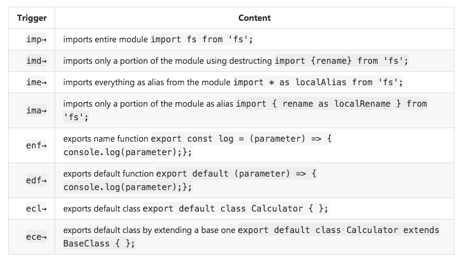

JavaScript extensions for VS Code
Visual Studio Code supports many features for JavaScript and Node.js development. The features that ship with the downloaded product are the core features: debugging, IntelliSense, code navigation, etc.
In addition, to these core features, you can install a large number of quality extensions to add features to VS Code for JavaScript development.
Tip: To see how to install and manage your extensions, please refer to the extension documentation.
Finding extensions
You can find JavaScript extensions by typing JavaScript in the Extension view search bar. Alternatively, you can find JavaScript extensions using tags: "tag:javascript". Search for more extensions in VS Code or in the Marketplace.
In addition you can search for Node.js extensions.
Tip: The extensions shown above are dynamically queried. Click on an extension tile above to read the description and reviews to decide which extension is best for you. See more in the Marketplace.
Recommended extensions
If you are just getting started, here are the extensions we recommend trying out.
ESLint
Marketplace - ESLint
Publisher - Dirk Baeumer
Easily integrate ESLint into your project. If ESLint isn't your favorite linter, choose among a variety of other linter extensions, including JSHint, JSCS, and JS Standard.
Read more about setting up JavaScript linters in the VS Code documentation.

JavaScript (ES6) code snippets
Marketplace - JavaScript (ES6) code snippets
Publisher - charalampos karypidis
VS Code comes with many built-in code snippets. The JavaScript (ES6) code snippets extension adds snippets for ES6 (ECMAScript 6) syntax. Here is a small sampling of the snippets provided by this extension. See the extension's README to see the dozens of snippets this pack gives you.

You can read more about JavaScript snippets in the VS Code documentation. For additional snippet packs, including Angular 1, Angular 2, Bootstrap 3, ReactJs, and jQuery, check out the Marketplace's Snippets category.
npm IntelliSense
Marketplace - npm IntelliSense
Publisher - Christian Kohler
This extension provides IntelliSense for npm modules when using import or require.